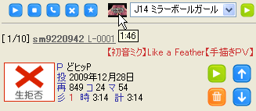

ニコリク・ミクノポップエディション（？）
[トップページに戻る]
[放送主向け文書に戻る]
私が使っているニコリク（生放送ツール）を配布しています。ご利用は自己責任でどうぞ。
ME について
この改造版ニコリクは、非公式のものです。ミクノポップの放送に推奨されているわけではありません。
また、ミクノ度の表示も個人的な趣味であり、放送とは直接関係ありませんし、必要なわけでもありません。
もちろんミクノ以外の放送で使って頂いても構いませんし、改造や再配布もできます。
必要なもの
Windows 2000 以上が必要です。Windows 7 でも動作するようです。
（場合によっては、Microsoft .NET Framework 3.5 SP1 以降が必要かもしれません）
Windows XP + InternetExplorer (ver6-8) の組み合わせのみ、ニコリクだけで接続できます。
Windows Vista + IE 8 の組み合わせの場合は、ニコリクだけでいい場合とダメな場合があるようです。要検証。
それ以外の組み合わせ（Windows Vista や Firefox, Google Chrome 等）だと、別途 NicoCookieImporter (NCI) という
ソフトを常駐させておく必要があります。共有できているのに繋がらない時は、一度クッキーを削除するといいようです。
きまりごと
ME を使ってるひとは、後日でいいのでデビュー回のコメントログを私まで送って下さい（ME の使用料なのです！）。
お願い
P名リストを充実させてきちんとお名前を表示するために、P名が不明な曲に関しては時間があれば調べて、
きりのいいところでまとめて私までお知らせいただくと、みんなが幸せになれます。P名リストという財産は
１日にしてならず、主みんなで作り上げるものです。よろしくお願いします！
ダウンロード
| [2010.06.10] v1.44 | NicoReqMikunopopEdition_144.exe |
| zip アーカイブ |
・ストックリスト（stock.txt）を自動的に保存するようになりました。
(#commit)
リストの内容に変化（曲の増減）があれば、定期的にチェックし保存します。
ニコリクが不意に落ちてもリストが失われる不幸な事故が減ると思います。
この機能は settings.js の 168 行目あたりでオフにできます。
・細かい情報（P名リスト、タグリスト）を更新しました。
・その他細かい点を調整しました。
| [2010.05.28] v1.43 | NicoReqMikunopopEdition_143.exe |
| zip アーカイブ |
・メンテナンスリリースです。機能の追加や修正はありません。
・細かい情報（P名リスト）を更新しました。(thx!> koke)
・その他細かい点を調整しました。
(#commit)
| [2010.04.15] v1.42 | NicoReqMikunopopEdition_142.exe |
| zip アーカイブ |
・生拒否動画がリクエストされた場合は、動画サムネイルにその旨を表示するようにしました。
(#commit)
ただし、現在の ME のデフォルトでは動画情報は一度取得されると４８時間キャッシュされます。
そのため生拒否が解除されているのにしばらく気付かない場合が発生する可能性があります。
（ちなみに専門用語でネガティブキャッシュと呼ばれる現象です）
なるべくはやく生拒否が解除されたことを知りたい方は、動画情報キャッシュ機能をオフにする
（settings["UseVideoInfoCache"] = 0）のをお勧めします。
生拒否動画の例 → sm9721421, sm9220942 よりよい対応方法へのご意見ありましたらお願いします。
（なお settings.js に１行追加しているので独自にいじっているひとは注意してください）
・ジングルのサムネイルにカーソルを合わせた時に、ジングルの長さをマウスオーバーで表示するようにしました。
(#commit)

すべての履歴を見ることもできます。
Tips
・接続するには、「ＵＲＬをブラウザからコピー・Ｃキー・そのままエンターキー」
・主セレをストックに追加するには「Ｉキー・ペースト」
・プレイリスト用テキストを準備するには、「Ｅキー・コピーボタンをクリック・掲示板にペースト」
・他人の枠でも、接続はできる。まずそれで接続できるかテストするのがおすすめ。
・再生履歴はニコリクを終了すると消えるけど、playlog.txt などのファイルにはちゃんと残っている。
ソース
次のアドレスで公開しています。少し詳しい README もこちらで読めます。
http://github.com/ryochin/nicoreq_mikunopop/tree/master
スクリーンショット
開発版のスクリーンショットです（ちょい古い）。

ME について、細かい話
元々 ME はミクノ度を表示するためだけの個人的な実験でした。今も役割は大して変わっていません。
ミクノ度の ME 以外での使用は非推奨ですので、くれぐれも自己責任ということでお願いします。
たまに「動きません」という報告を生放送内で頂きますが、バグレポートを頂かないと対処のしようが
ありませんので、不具合報告・要望・サポート等必要でしたら直接私までご連絡ください。
放送中に匿名で仰ってもヤキモキする以上のお手伝いはできませんし、私の精神衛生上よろしくありません。
ME にこの機能を取り込んで欲しいというお話を頂くことがありますが、「最小限の機能をストレスなく
使えるように」というコンセプトに合致しないものは基本的に見送らせて頂いています。それでも
機能を拡張したい方がいらっしゃれば、完動するパッチをお送り頂くか、あるいは独自に ME 改造版を
配布なさるのがよいと考えています。
その他
不具合、改善点や要望などありましたらご連絡ください。
戻る
[トップページに戻る]
[放送主向け文書に戻る]